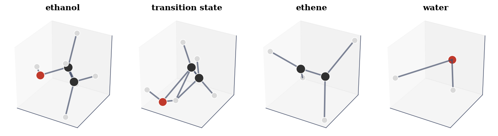
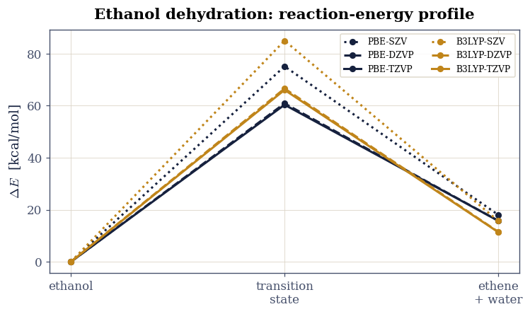
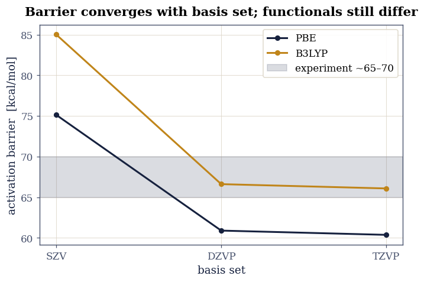
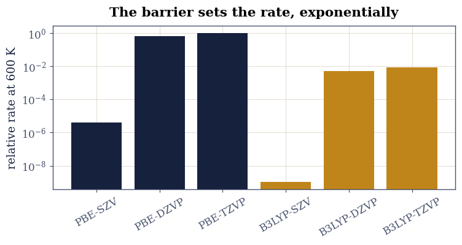

6.1 The Dehydration of Ethanol#
from ecp.style import header, use_style
use_style()
header(
volume="Volume VI — Reactions and Free Energy",
number="6.1",
title="The Dehydration of Ethanol",
blurb="A reaction profile from first principles: ethanol splits into ethene and "
"water over a transition state, and the activation barrier depends sharply on the "
"density functional and basis set used to compute it.",
difficulty="intermediate",
estimate="75–100 min",
source="FS 2023 · Lecture 7 (density functionals and basis sets)",
)
Notebook overview#
Heat ethanol over an acid catalyst and it loses water, leaving ethene: \(\mathrm{CH_3CH_2OH \to CH_2{=}CH_2 + H_2O}\). The reaction does not happen all at once; it passes through a transition state, a fleeting arrangement at the top of an energy barrier where the C–O bond is breaking and a C–H bond is migrating. The height of that barrier sets the rate, and computing it is a standard test of an electronic-structure method.
This is the course’s exercise on density functionals and basis sets, and its point is that the answer depends on the method. We take the course’s own optimised structures (reactant, transition state, products) and its committed total energies, computed with two functionals (PBE and B3LYP) across three basis sets (SZV, DZVP, TZVP), and build the reaction-energy profile, extract the activation barrier and reaction energy, watch them converge with basis-set size, and turn the barrier into a reaction rate.
Provenance. This notebook develops Lecture 7 of the course (the dehydration of ethanol, density functionals, and basis sets), an exercise designed by the author (Raymond Amador). The molecular structures (
ethanol.xyz,ethene.xyz,H2O.xyz,ts.xyz) and the total energies are the course’s own committed CP2K results; energies were computed with PBE and B3LYP. The full course credit is in the footer.
Reading a validation. Each task closes with a check against an independent fact: a transition state must lie above the reactant, the reaction is known to be endothermic, a converged barrier should match the measured one. A ✗ flags a mismatch; a ✓ is strong evidence, not proof.
Theory in brief#
Reaction profile and the barrier#
A reaction’s energy along its path rises from the reactant to a maximum at the transition state, then falls to the products. Two numbers summarise it: the activation barrier
which controls the rate, and the reaction energy \(\Delta E = E_{\rm products} - E_{\rm reactant}\), which says whether the reaction absorbs energy (endothermic, \(\Delta E>0\)) or releases it. Ethanol dehydration is endothermic and has a high barrier, which is why it needs heat and a catalyst.
Functionals and basis sets#
A density-functional calculation makes two approximations we can see here. The exchange-correlation functional (the generalised-gradient PBE, or the hybrid B3LYP that mixes in exact exchange) sets the underlying physics; the basis set (here the increasingly flexible SZV \(\to\) DZVP \(\to\) TZVP) sets how accurately the orbitals are represented. A result is trustworthy only once it has converged with basis-set size, and different functionals can still disagree after convergence: barriers are a sensitive probe of both.
From barrier to rate#
Transition-state theory turns the barrier into a rate constant through the Eyring (or, equivalently, Arrhenius) form
exponentially sensitive to the barrier, so the few-kcal/mol spread between methods becomes orders of magnitude in the predicted rate.
Setup#
import os
import numpy as np
import matplotlib.pyplot as plt
from ecp import validate
INK, AMBER, SOFT = "#16213e", "#c0851a", "#46506b"
HARTREE_KCAL = 627.503 # Hartree -> kcal/mol
KB_KCAL = 1.987204e-3 # Boltzmann constant [kcal/mol/K]
CPK = {"H": "#d9d9d9", "C": "#303030", "O": "#c0392b", "N": "#2c5fb0"}
RADIUS = {"H": 0.31, "C": 0.76, "O": 0.66, "N": 0.71} # covalent radii [Å]
def data_file(name):
"""Locate a shipped data file, from the repo root (CI) or the notebook dir (Colab).
Parameters
----------
name : str
File name (or relative path) under a ``data`` directory.
Returns
-------
str
The first existing path found.
Raises
------
FileNotFoundError
If the file is not found under any candidate base.
"""
for base in ("data", os.path.join("notebooks", "06-reactions-free-energy", "data")):
path = os.path.join(base, name)
if os.path.exists(path):
return path
raise FileNotFoundError(name)
def read_xyz(name):
"""Read an .xyz file.
Parameters
----------
name : str
File name (coordinates in Å).
Returns
-------
tuple
``(elements, coords)``: a list of element symbols and an (N, 3)
coordinate array in Å.
"""
lines = open(data_file(name)).read().splitlines()
n = int(lines[0].split()[0])
els, xyz = [], []
for ln in lines[2:2 + n]:
p = ln.split()
els.append(p[0])
xyz.append([float(v) for v in p[1:4]])
return els, np.array(xyz)
def draw_molecule(ax, els, xyz, title=""):
"""Draw a molecule as a ball-and-stick figure on a 3-D axis.
Parameters
----------
ax : mpl_toolkits.mplot3d.axes3d.Axes3D
The 3-D axis to draw on.
els : list of str
Element symbols.
xyz : numpy.ndarray
Coordinates, shape (N, 3), in Å.
title : str, optional
Axis title.
Notes
-----
A bond is drawn between two atoms within a generous multiple of the sum of
their covalent radii, so loosely-placed input geometries still show bonds.
"""
xyz = xyz - xyz.mean(0)
for i in range(len(els)):
for j in range(i + 1, len(els)):
d = np.linalg.norm(xyz[i] - xyz[j])
if d < 1.6 * (RADIUS.get(els[i], 0.7) + RADIUS.get(els[j], 0.7)):
ax.plot(*zip(xyz[i], xyz[j]), color=SOFT, lw=2.5, alpha=0.7)
for el, r in zip(els, xyz):
ax.scatter(*r, s=320 * RADIUS.get(el, 0.7), color=CPK.get(el, "#888"),
edgecolors="white", depthshade=True)
ax.set(xticks=[], yticks=[], zticks=[], title=title)
ax.set_box_aspect((1, 1, 1))
Exercise 1 — The reaction and its structures#
The course optimised four structures with CP2K: the ethanol reactant, the
transition state, and the ethene and water products. We render the
committed geometries. In the transition state the C–O bond has stretched and a
hydrogen is midway between carbon and the departing oxygen, the geometric signature of
a concerted dehydration. The CP2K input that produced them is a PBE deck; it ships
here: ethanol-pbe.inp.
Part a) Load and render the four structures. Part b) Confirm the transition state’s stretched C–O bond.

Fig. 42 The committed CP2K-optimised structures of the ethanol dehydration: the ethanol reactant, the transition state (the C–O bond stretched, a hydrogen migrating to the leaving oxygen), and the ethene + water products. Carbon grey, oxygen red, hydrogen white.#
shortest C–O distance: ethanol 1.43 Å -> transition state 1.90 Å (stretched)
Validation 1 — the transition state has a breaking C–O bond#
In the dehydration the C–O bond breaks, so the C–O distance must be markedly longer in the transition state than in the equilibrium ethanol (a normal C–O bond is ~1.4 Å).
✓ the transition state has a stretched (breaking) C–O bond [C–O: ethanol 1.43 Å → TS 1.90 Å]
True
Exercise 2 — The reaction-energy profile#
Now the energies. For each method the course computed the total energy of every species; the reaction profile is the energy relative to ethanol at three points along the path: reactant (zero by definition), transition state (the barrier), and products (ethene + water). We build it from the committed totals for all six method combinations (Assignment 5).
Part a) Assemble the profiles in kcal/mol. Part b) Plot them and confirm every transition state lies above its reactant.

Fig. 43 Reaction-energy profiles for ethanol dehydration, from the course’s committed total energies: energy relative to ethanol (kcal/mol) at the reactant, transition state, and products, for PBE (navy) and B3LYP (amber) across three basis sets. Every path climbs a large barrier to the transition state and ends above the reactant (endothermic). The minimal SZV basis overshoots; DZVP and TZVP nearly coincide.#
Validation 2 — every transition state is a barrier#
A transition state is by definition a maximum along the path, so the barrier must be positive for every method, and the reaction must be endothermic (products above reactant) as ethanol dehydration is known to be.
✓ every method gives a positive barrier and an endothermic reaction [barriers 60–85, reaction energies 11–18 kcal/mol]
True
Exercise 3 — Convergence with functional and basis set#
The whole point of the exercise: how much do the method choices matter? Plotting the barrier against basis-set size for each functional shows the minimal SZV basis is far from converged, while DZVP and TZVP agree closely, so the basis is converged by triple-zeta. The two functionals still differ by a few kcal/mol at convergence, with the hybrid B3LYP-TZVP the most reliable estimate, landing near the experimental barrier of roughly 65–70 kcal/mol.
Part a) Tabulate barrier and reaction energy by method. Part b) Confirm the basis is converged at TZVP and the B3LYP-TZVP barrier is in the experimental range.
method barrier reaction (kcal/mol)
PBE-SZV 75.1 18.0
PBE-DZVP 60.9 15.8
PBE-TZVP 60.4 15.7
B3LYP-SZV 85.0 15.7
B3LYP-DZVP 66.6 11.5
B3LYP-TZVP 66.1 11.4

Fig. 44 Activation barrier of ethanol dehydration versus basis-set size for PBE (navy) and B3LYP (amber). The minimal single-zeta SZV basis overshoots badly; the barrier converges from DZVP to TZVP. At convergence the hybrid B3LYP-TZVP (~66 kcal/mol) sits in the experimental range (grey band, ~65–70 kcal/mol); PBE underestimates it.#
Validation 3 — converged at TZVP, and B3LYP lands on experiment#
The barrier must be converged by triple-zeta (DZVP and TZVP within a couple of kcal/mol), and the best method, B3LYP-TZVP, must fall in the measured range.
✓ the barrier is basis-set converged by TZVP (DZVP ≈ TZVP) [|B3LYP DZVP − TZVP| = 0.53 kcal/mol]
✓ the converged B3LYP-TZVP barrier matches the experimental range [B3LYP-TZVP barrier = 66.1 kcal/mol (experiment ~65–70)]
True
Exercise 4 — From barrier to reaction rate#
The barrier matters because it sets the rate, exponentially. Through transition-state theory Eq. 35 the rate constant scales as \(e^{-\Delta E^{\ddagger}/k_BT}\), so the spread of barriers between methods becomes a spread of many orders of magnitude in the predicted rate. We show this directly: the relative rate at a typical reaction temperature, computed from each method’s barrier, ranges over more than ten decades (Assignment 6).
Part a) Compute the relative Boltzmann rate factor at \(T=600\,\)K for each method. Part b) Confirm the method choice changes the predicted rate by many orders of magnitude.

Fig. 45 Relative reaction rate \(e^{-\Delta E^{\ddagger}/k_BT}\) at 600 K (log scale) for each method, normalised to the fastest. Because the rate depends exponentially on the barrier, the few-kcal/mol differences between functionals and basis sets become many orders of magnitude in rate: a converged method is not optional.#
predicted rate varies by a factor of 9.5e+08 across the six methods at 600 K
Validation 4 — the rate spans many orders of magnitude#
Because \(k\propto e^{-\Delta E^{\ddagger}/k_BT}\), the ~25 kcal/mol spread of barriers must translate into many orders of magnitude in rate, the practical reason method convergence matters.
✓ the method choice changes the predicted rate by orders of magnitude [fastest/slowest rate = 9.5e+08 at 600 K]
True
Notebook summary#
We assembled the reaction profile for ethanol dehydration from the course’s committed PBE and B3LYP energies. Every method gave a positive barrier over a transition state with a stretched C–O bond and an endothermic reaction, and the barrier converged with basis-set size: the minimal SZV overshoots, while DZVP and TZVP agree, the converged B3LYP-TZVP barrier of \(66\,\)kcal/mol landing in the experimental range. Because the rate depends exponentially on the barrier, the few-kcal/mol spread between methods becomes orders of magnitude in predicted rate, so method convergence is not optional.
Outlook#
The full path. A nudged-elastic-band calculation (next notebook) finds the transition state and the minimum-energy path, rather than assuming a single TS geometry.
Free energy, not just energy. Adding vibrational entropy gives the activation free energy \(\Delta G^{\ddagger}\) and the absolute Eyring prefactor \(k_BT/h\), hence an actual rate in s⁻¹.
Dispersion and exact exchange. B3LYP’s admixture of exact exchange improves barriers; adding a dispersion correction (D3) matters more for larger molecules.
Catalysis. The gas-phase barrier here is large; an acid catalyst opens a lower path, the reason the reaction is run over a catalyst in practice.
References#
Axel D. Becke. Density-functional thermochemistry. III. the role of exact exchange. The Journal of Chemical Physics, 98(7):5648–5652, 1993. doi:10.1063/1.464913.
John P. Perdew, Kieron Burke, and Matthias Ernzerhof. Generalized gradient approximation made simple. Physical Review Letters, 77(18):3865–3868, 1996. doi:10.1103/PhysRevLett.77.3865.
from ecp.style import footer
footer()